CONFIGURACIONES INICIALES EN META ADS
No te preocupes si no entiendes bien cada concepto que verás, recuerda que inicialmente solo nos enfocaremos en dejar el ecosistema listo y más adelante podremos comenzar a aprender y familiarizarnos más con todo lo que nos ofrece Meta Ads. Iniciemos:
Ten abierto tu perfil
Asegúrate de estar en el navegador por el que ingresarás siempre a tu perfil de Facebook y de estar logueado en el perfil personal que utilizarás para crear tu ecosistema. Te recomendamos utilizar uno que tenga actividad y antigüedad en Meta para evitar bloqueos.
Verifica que puedas ver tu inicio tradicional al ingresar a facebook.com:
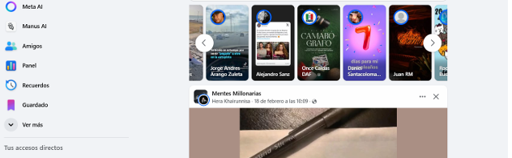
Creemos nuestro administrador comercial
1) En el mismo navegador, ingresa a business.facebook.com/overview y haz clic en “Crear una cuenta” en la pantalla de bienvenida.
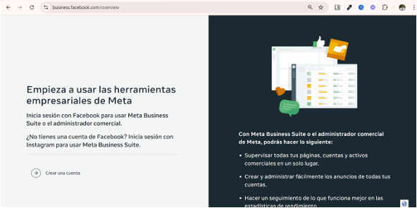
2) Ingresa un nombre para tu negocio y cuenta, tu nombre y por último un correo electrónico. Luego de enviarlo, te saldrá una indicación para confirmar tu correo en tu bandeja.
3) Ingresa a la bandeja de entrada de tu correo y busca la confirmación de Meta:
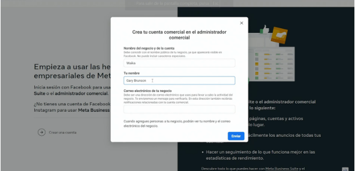
4) Ingresa al email y haz clic en el botón azul "Confirmar".
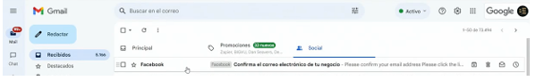
Al dar clic, serás redirigido a una página y ya tendremos creado nuestro administrador comercial.
Creemos nuestra fanpage de Facebook
1) Dentro de tu configuración del negocio, busca en la barra izquierda la opción de "Cuentas" > "Páginas".
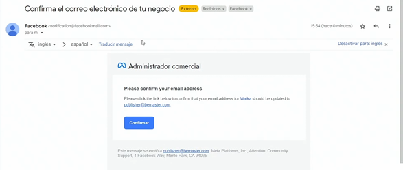
2) Haz clic en "Agregar" y se desplegará un menú:
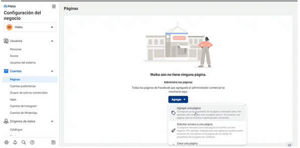
IMPORTANTE: Si YA tienes una página creada, da clic en "Agregar una página existente". Si no la tienes, sigue el paso de "Crear una nueva".
3) Selecciona "Crear una página". Llena los datos y confirma en el modal de creación:
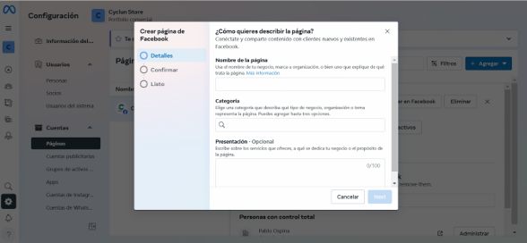
4) Una vez creada, podrás acceder a la vista previa de la página:
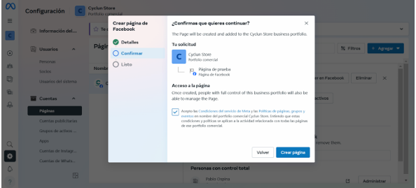
5) Entra a "Editar" para poder subir tu foto de perfil y portada iniciales:
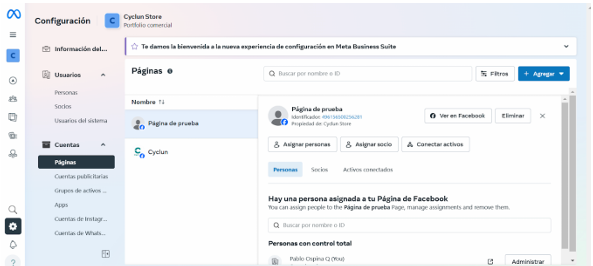
Permisos y Usuarios (Paso Extra)
Asegúrate de asignarte como administrador total de los activos en la plataforma. Ve a "Usuarios" > "Personas".
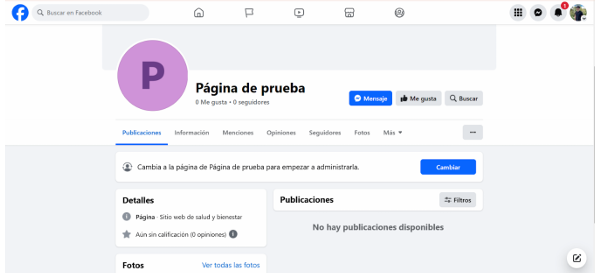
Asigna tu perfil con control total sobre la página recién creada:
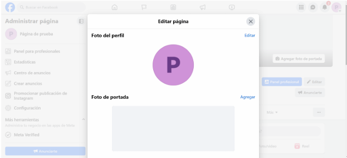
Creemos nuestra Cuenta Publicitaria
1) En el menú izquierdo, busca e ingresa a "Cuentas" > "Cuentas publicitarias":
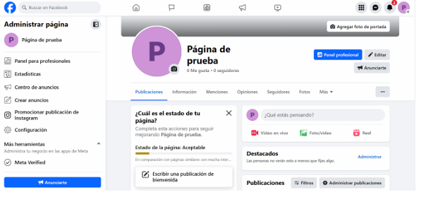
2) Haz clic en Agregar y luego en "Crear una cuenta publicitaria nueva":
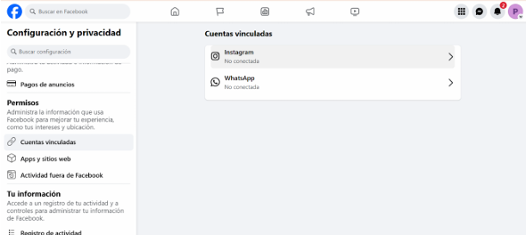
3) Selecciona que esta cuenta será usada para "Mi negocio".
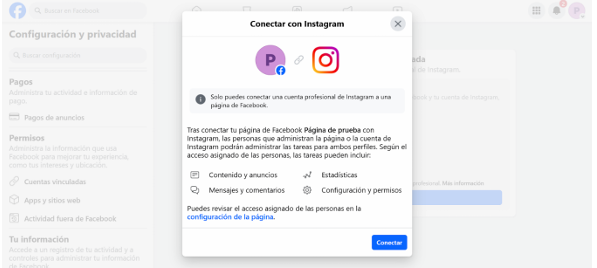
4) Asígnale los permisos necesarios a tu usuario personal en esta cuenta publicitaria (marcando "Control Total").
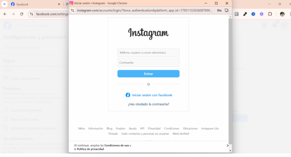
5) Verás una confirmación de cuenta creada satisfactoriamente.
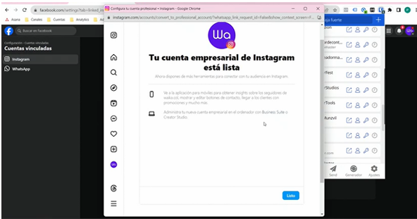
Conectar Instagram, WhatsApp y DataSets
Añade y vincula tus otros canales de comunicación y rastreo en el menú lateral.
Cuentas de Instagram: En el menú, dirígete a Cuentas de Instagram para enlazar la aplicación.
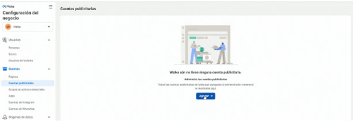
Ingresa tu clave y usuario en el diálogo para conectar tu cuenta.
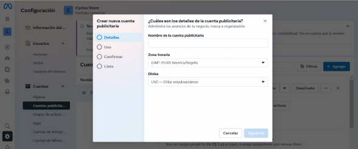
Cuentas de WhatsApp: Similar al proceso de Instagram, puedes registrar y conectar tu WhatsApp Business aquí:
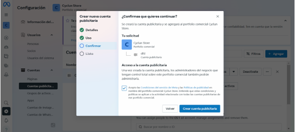
Conjuntos de Datos (Píxeles): Ve a Orígenes de datos > Conjuntos de datos para crear el pixel rastreador de tu tienda.
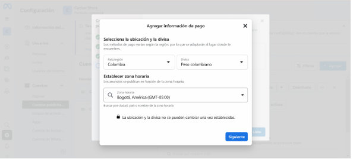
Dale en "Agregar", asígnale un nombre a tu DataSet y dale a crear.
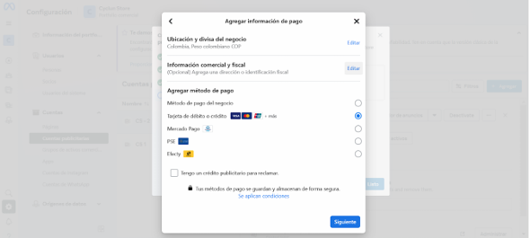
Configuración Pago
Dirígete a la configuración de cobros y facturación de la plataforma.
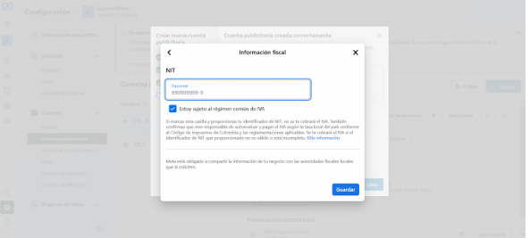
Haz clic en el botón "Agregar método de pago".
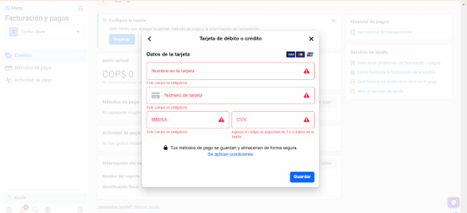
Verifica tu ubicación y divisa exacta. Esto no se puede cambiar después.
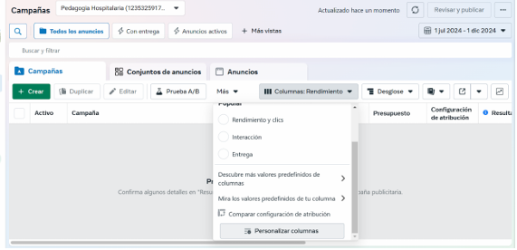
Añade la información fiscal (como el RUT) si necesitas exención de IVA en tu país mediante los modales correspondientes.
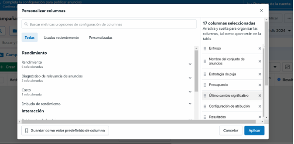
Finalmente, ingresa los datos de tu tarjeta de crédito o débito a utilizar.
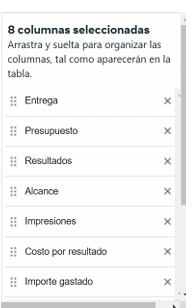
Preparemos nuestras columnas
1) Ve al Administrador de anuncios principal.
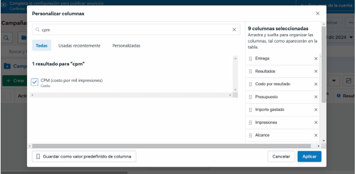
Acepta las políticas anti-discriminación de Meta si es que te aparece el modal.
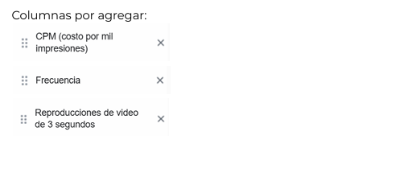
3) En tu reporte, haz clic en "Columnas: Rendimiento" y luego en "Personalizar columnas":
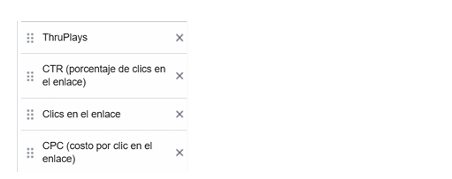
4) Con el buscador central, añade todas las columnas faltantes necesarias.
Agrega "CTR":
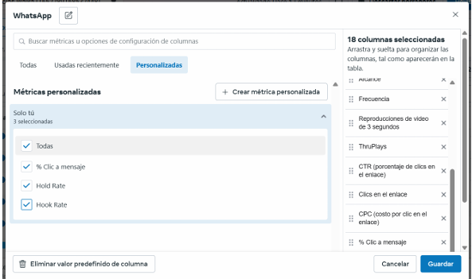
Agrega "CPC":
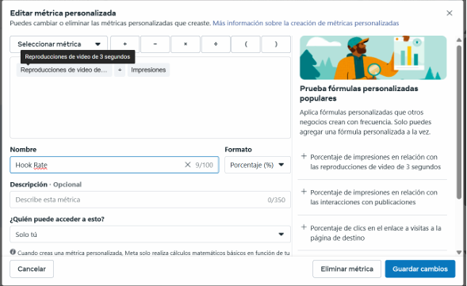
Agrega "ROAS":
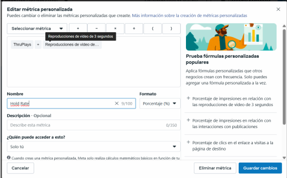
Verifica también las configuraciones de Atribución si es necesario.
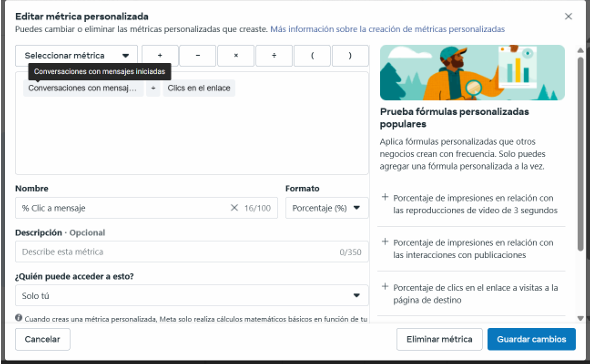
Métricas Personales a Crear:
Crea las métricas personalizadas necesarias y guárdalas utilizando las fórmulas correspondientes para tu estrategia de video:
Hook Rate (Formula)
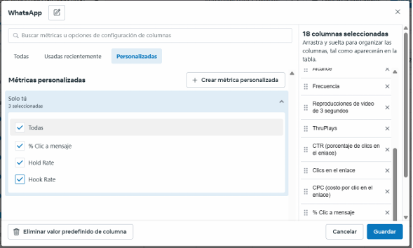
Hold Rate (Formula)
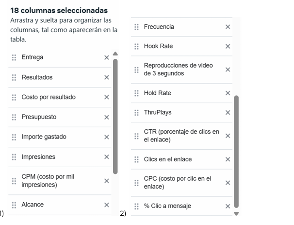
10) Finalmente, haz clic en "Guardar como valor predefinido de columna" (por ejemplo con el nombre "WhatsApp") y aplica los cambios.
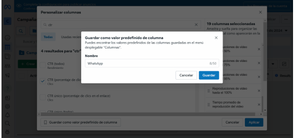
11) Tu Administrador de Anuncios se verá configurado con toda la información crucial al final de este proceso.
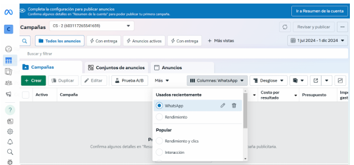
¡FELICIDADES CRACK!
Espero que hayas podido realizar todas las configuraciones sin inconveniente alguno. Recuerda revisar de nuevo de arriba a abajo para asegurar que todo quedó correctamente configurado.
CONSEJO DE KAI
Meta actualiza frecuentemente sus interfaces. No te asustes si ves los botones ligeramente distintos; la estructura y funcionalidad siempre es la misma.
Espero seguirte viendo avanzar y tener resultados. ¡Tú Puedes!